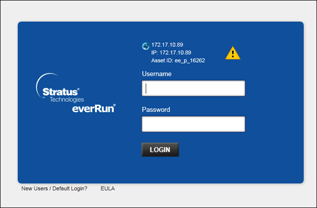
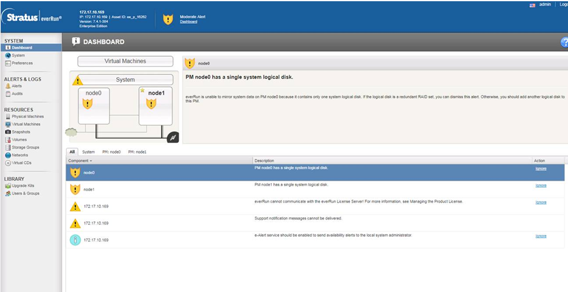

Log in Stratus everRun Availability Console
After completing the installation of the everRun software, log on to the everRun Availability Console to accept the end-user license agreement (EULA) and to manage the everRun system.
- To log on to the everRun Availability Console the first time, you need the following:
a) The node0 (primary) IP address - You note this address during installation.
See the Recording the Management IP Address section of the everRun’s User’s Guide.
b) The system IP address - The network administrator provides this information.
See the Obtaining System IP Information section of the everRun’s User’s Guide.
c) The license .KEY file that you received from Stratus when you purchased the everRun software - You must upload this file to the everRun Availability Console to complete the initial logon. Locate the file before you begin the initial logon.
- From the remote management computer, enter the IP address of node0 (primary) into a browser address bar.
- The logon page of the everRun Availability Console displays.

- Enter admin for the Username and admin for Password, and then click LOGIN.
- The Stratus everRun EULA displays.
- Read the EULA and click Accept.
- The INITIAL CONFIGURATION page displays.
- Select NOTIFICATIONS.
- The Enable Support Notifications check box is checked, by default. If you do not want the everRun system to send health and status notifications to your authorized Stratus service representative, uncheck the box. You can change this setting later.
See the Configuring Remote Support Settings section of the everRun’s User’s Guide. - Select SYSTEM IP.
- For IP Address, enter the address you obtained from your network administrator.
- Enter the network information.
- Click Continue.
- The Portal Restart Required window displays.
- After a minute, click OK.
- The LICENSE INFORMATION window displays.
- Select Upload License Key.
- Click Browse and select the license .KEY file that you received from Stratus.
- Select the license file and click Upload.
- The initial logon is complete, and the everRun Availability Console displays.
- Bookmark or otherwise make note of the system IP address for use when logging in to the console in the future.
NOTE: For security, change the default user login name and password for the admin account on the Users & Groups page.
See the Managing Local User Accounts section of the everRun’s User’s Guide. The DASHBOARD of the everRun Availability Console displays node0.
